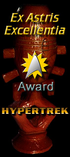
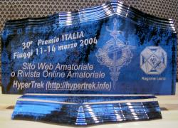
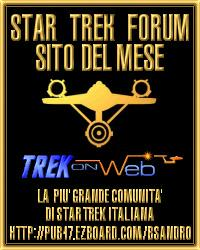
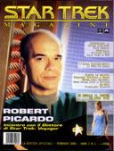
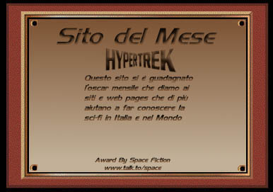
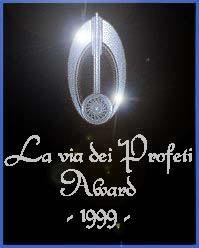
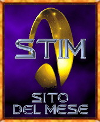
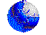

Riconoscimenti |
I riconoscimenti che mi fanno più piacere sono i semplici messaggi di ringraziamento oppure i messaggi con le segnalazioni di aggiunte o correzioni che mi mandano moltissime persone. Questi sono invece i riconoscimenti che HyperTrek ha raccolto grazie al sostegno di tutti voi, grazie di cuore!
Ex
Astris Excellentia Award for December 2004 del sito
Ex Astris
Scientia con questa motivazione: «An introductory note on HyperTrek says that the site is deliberately made for Italian Trekkers who don't speak English. While I understand this was the right thing to do, it's a pity for everyone else because the site is packed with information. HyperTrek has the content of several decent Trek sites combined. There are fairly complete listings of the episodes including TAS and Phase II, on characters, actors, technology, planets, species and more. All canon (well, and some FASA) sources are properly quoted, something that is neglected in other databases. The design was always plain and simple, relying rather on the small icons than on large illustrations. Recently the top menu has been converted to an adaptable side bar which significantly facilitates the navigation through the site. What I like very much too is the alphabetical topic listing, an index that truly deserves its name. Congratulations go to Luigi Rosa for one of the biggest and best Trek databases!»
HyperTrek è una delle fonti dell'Appendice B ed è citato nella bibliografia del libro di Angelica Tintori Star Trek: Lo specchio dell'America - Serie TV e realtà socio-culturale americana: Deep Space Nine e Voyager edito da Delos Books.
Nel
corso della Italcon/Deepcon
del marzo 2004 HyperTrek ha ricevuto il Premio Italia della
World SF nella
categoria «Sito Amatoriale o Rivista Online Amatoriale».
HyperTrek è citato come sito di riferimento nella sezione
Le 30 Web-Community dei telefilm più amati del sito di
Sorrisi e Canzoni TV a
cura di Antonio Mustara con questa motivazione: «Come ci sia riuscito non lo
sappiamo, certo è che Luigi Rosa, il creatore di HyperTrek, ha messo ordine
nell'universo Star Trek (5 distinte serie tv, 10 film, libri, razze aliene,
astronavi, etc) in modo esemplare, realizzando un'opera di qualità e
dimensioni eccezionali. HyperTrek è stato addirittura la fonte principale
per una tesi di laurea da 110 e lode, naturalmente consultabile sul sito.
Per una precisa scelta dell'autore le immagini sono poche; in questo modo si
è alleggerito il sito permettendo una navigazione più veloce.»
Grazie ad Antonio Mustara per la bella motivazione.
|
UNIVERSITÀ DEGLI STUDI DI BOLOGNA IMMAGINI LATENTI Tesi di laurea in Relatore Correlatore Presentata da Anno Accademico 2001-2002 |
HyperTrek è citato nella bibliografia della tesi, inoltre un'appendice della tesi è tratta da HyperTrek. Angelica si è laureata con 110 e lode. |
Sito del mese Maggio 2002 di Trek on Web di Sandro Kvar.
HyperTrek si è aggiudicato il titolo con il 48,1% delle preferenze,
grazie a tutti!
Sito del mese Novembre 2000 nella Guida Star Trek di SuperEva.
Pregate fratelli e sorelle...
No non sono né impazzito e non siete dalla guida in religione, ma ho voluto
iniziare così perché vi parlerò del sito più amato dai trekker italiani: la
bibbia di Star Trek:
www.Hypertrek.org
Questo sito è una miniera d'oro per tutti i fan di Star Trek; vi è di tutto:
dalla sezione libri alla sezione sulla serie animata.
Un grandissimo complimento va al creatore Luigi Rosa anche per la costanza
nel tener aggiornato il sito.
Un altro complimento lo merita anche per la chiarezza e la semplicità nello
scrivere.
Unica pecca, che poi non è una pecca vera e propria, è la grafica; un po'
scarna ma essendo questo un sito non da guardare ma da leggere (tutto d'un
fiato!!!) è più che accettabile.
Per questi ed altri motivi (troppi da elencare) il sito si merita il premio
di miglior sito di Novembre.
Un piccolo incoraggiamento: SEI TUTTI NOI LUIGI!!!!!
Sito
recensito da Luca Sambucci sul primo numero della
nuova rivista ufficiale di
Star Trek in un articolo intitolato HyperTrek la bibbia italiana.
 Lusinghiera
recensione del sito nella rubrica Tre passi nella Rete del 8 gennaio
2000 apparsa su il Giorno,
il Resto del
Carlino e la Nazione.
Lusinghiera
recensione del sito nella rubrica Tre passi nella Rete del 8 gennaio
2000 apparsa su il Giorno,
il Resto del
Carlino e la Nazione.
|
UNIVERSITÀ DEGLI STUDI DI BOLOGNA IMMAGINARIO E TECNOLOGIA NELLA SAGA DI STAR TREK Tesi di laurea in Relatore Presentata da Anno Accademico 1997-98 |
HyperTrek è citato nella bibliografia della tesi. Veronica si è laureata con 110 e lode. |
Sito
del mese di Space Fiction.
La
Via Dei Profeti, premio dell'Organizzazione
Libera Bajor, le cui pagine meritano veramente una visita anche per la
ricchezza di informazioni.
 LCARS:
Federation Databank's "Site to Visit" award di
http://welcome.to/LCARS
con la seguente motivazione: «I have found a lot of work was put into the
content of your site and I just wanted to show my appreciation by giving you
this award.»
LCARS:
Federation Databank's "Site to Visit" award di
http://welcome.to/LCARS
con la seguente motivazione: «I have found a lot of work was put into the
content of your site and I just wanted to show my appreciation by giving you
this award.»
Sito tema della puntata del 2 febbraio 1999 della trasmissione Crackers! di RadioRai 2. Un ringraziamento all'ascoltatore che ha segnalato HyperTrek!
Sito
del mese di Febbraio 1999 di STAR TREK
ITALIA MAGAZINE
 YAHOO
ITALIA - IL MEGLIO DELLA SETTIMANA 22-28 GENNAIO 1999
YAHOO
ITALIA - IL MEGLIO DELLA SETTIMANA 22-28 GENNAIO 1999
Osservata da un certo punto di vista, la pubblicità è luogo fantastico.
Un mondo con ogni sorta di meraviglia: donne stupende, strade deserte nel
pieno centro della città, uomini che non devono chiedere mai. Un mondo,
anche, popolato da strane creature: pennelli che ostacolano il traffico,
animali parlanti, ragionieri volanti. Un mondo ai margini del mondo,
insomma: un mondo "dove nessun uomo ha mai osato prima". Hyper Trek è
una delle maggiori risorse su Star Trek disponibili in italiano. Si tratta
di una vera e propria enciclopedia con centinaia di voci organizzate in
alcune categorie. Ogni voce è trattata con grande completezza: se nella
sezione tecnica scopriamo i segreti del teletrasporto, in quella medica ci
vengono descritte le malattie del prossimo millennio.
 SITO
SEGNALATO NEL LUGLIO 1998 DA
VIRGILIO TRA GLI
ITINERARI DELLA FANTASCIENZA
SITO
SEGNALATO NEL LUGLIO 1998 DA
VIRGILIO TRA GLI
ITINERARI DELLA FANTASCIENZA
La descrizione di HyperTrek è stata: Chi ama Star Trek non può fare a
meno di visitare l'Hypertrek di Luigi Rosa, ovvero la versione ipertestuale
del famoso WinTrekHelp, una raccolta di dati su Star Trek - comprese tutte
le trame di tutti gli episodi - che non ha eguale neppure nelle
pubblicazioni ufficiali.
 Sito
del mese di Luglio/Agosto 1998 di
WEBTREK ITALIA
Sito
del mese di Luglio/Agosto 1998 di
WEBTREK ITALIA
SEHLAT
D'ORO 1997 DELLA
FONDAZIONE VULCANIANA
Il premio è stato attribuito con questa motivazione: per l'impegno e
la dedizione con cui ha creato e aggiornato il WinTrekHelp, un software che
ha permesso anche alle persone di lingua italiana di superare la fruizione
passiva dei film e/o telefilm della serie Star Trek, fornendo loro uno
strumento organico e razionale per accedere all'insieme di conoscenze
sull'universo Trek e che ha pertanto sicuramente contribuito alla diffusione
delle idee e dello spirito che ne sono alla base.